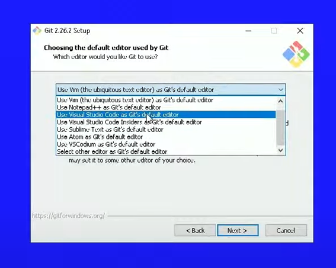
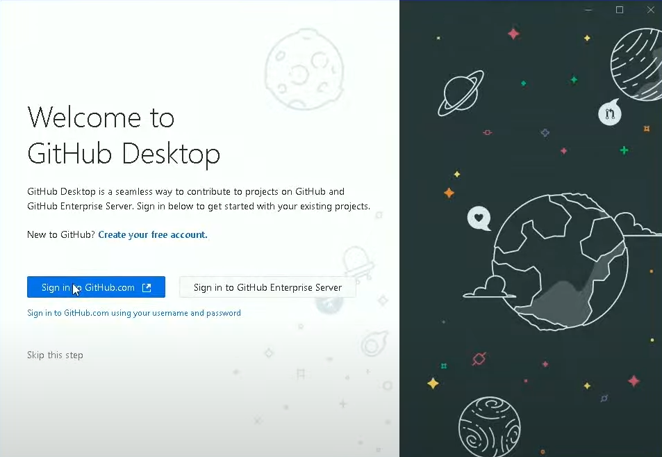

Introdução
O que é controle de versão?
Para começar este guia vamos imaginar uma situação. Suponha que você, desenvolvedor, está trabalhando em um projeto importante e que provavelmente será revisado várias vezes e, como em todos os projetos, você acaba gerando diferentes versões desse trabalho. Mas, e se em algum momento você tiver que retornar a uma versão que tinha um detalhe que continha um detalhe inicialmente descartado, mas que agora deseja recuperar? Como voltar àquela versão que se perdeu no abismo dos ctrl + Z? É exatamente para isso que um controle de versões existe.
Em suma, essas são ferramentas que nos permitem armazenar as versões dos nossos projetos de forma segura e com fácil manejo, sem ter que depender de inúmeros backups que vão ocupar muita memória em nossas máquinas.
E duas dessas ferramentas se tornaram extremamente populares no mercado, temas centrais deste guia: Git e Github.
Diferença entre Git e Github e seus benefícios
Em 2005, Linus Torvalds – criador do sistema operacional Linux – criou um um Sistema de Controle de Versões (Version Control System – VCS, em inglês) chamado Git. O Git nada mais é do que um programa feito para armazenar versões de projetos em repositórios - explicados em detalhes mais adiante - locais. Além disso, o software inclui um terminal que permite acessar essas versões por meio de comandos. De forma breve, o Git é a forma que usamos para guardar as versões dos nossos projetos de forma local, ou seja, em nossas máquinas apenas.
Já o Github, Já o GitHub é como um Git "tunado", que permite, por meio da tecnologia do Git, salvar nossos repositórios de forma remota em nuvem e, além disso, também viabiliza a colaboração entre desenvolvedores. Basicamente, o GitHub, além de ser um meio de acessar repositórios e arquivos remotamente – da mesma maneira que você está fazendo agora para ler este conteúdo –, também funciona como uma espécie de “LinkedIn para desenvolvedores” É lá que a maioria das pessoas que busca uma vaga na área armazena publicamente seus projetos de portfólio – assim como eu faço. e acredite, isso é algo que a maior parte das grandes empresas no mercado valorizam muito.
O Github te permite construir um portfólio profissional e colaborar com outras pessoas, dando aos usuários desejados permissão para editarem o código do seu repositório E não é à toa que muitas empresas utilizam o GitHub Enterprise, que é o serviço do GitHub voltado para organizações, Ele permite que empresas gerenciem seus projetos remotamente e de forma organizada, possibilitando que todos os funcionários colaborem de maneira eficiente.. Dessa forma, o Github torna-se um bônus quase imprescindível na vida profissional de todo desenvolvedor da área de tecnologia.
Instalação e Configuração
Instalando o Git no Windows, macOS e Linux
Nota: para que tudo ocorra bem certifique-se de instalar primeiro o Git e depois o Github Desktop. Ademais, mesmo que exista uma versão do Git para 32 bits, o Github Desktop só aceita 64 então você terá que ter uma máquina de 64 bits de qualquer jeito.
Antes de tudo, certifique-se que seu sistema operacional é de 64 bits – você pode ver isso nas propriedades do seu computador – e acesse o site git-scm.com, nele, clique na opção de baixar a versão mais recente, como indicado na imagem abaixo.

A instalação deve ocorrer normal, não há muito oque pontuar sobre a configuração padrão de instalação. Apenas atente-se na hora de escolher o editor de código certo, na próxima imagem o professor escolheu o Visual Studio Code normal, mas se você usar outro editor ou o VSCode insiders, você terá que escolher outra opção nesse menu
De resto, deixe tudo como estiver na hora da instalação e por fim, reinicie o seu computador para certificar que tudo vá funcionar bem.
Instalando o GitHub Desktop
Já para o Github desktop, vá até o site desktop.github.com e clique em download, dessa vez a instalação é muito mais sossegada e você eventualmente chegará a uma tela parecida com essa:
